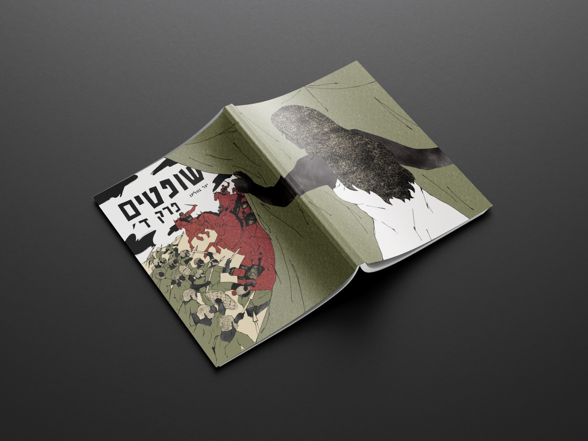
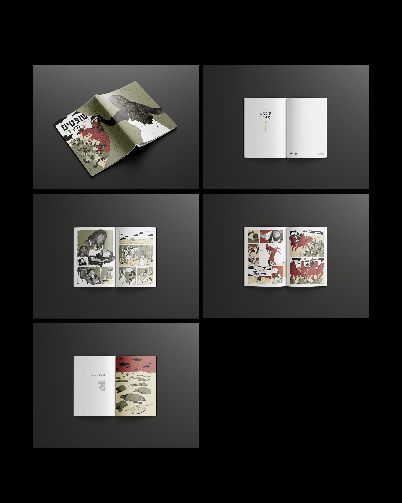
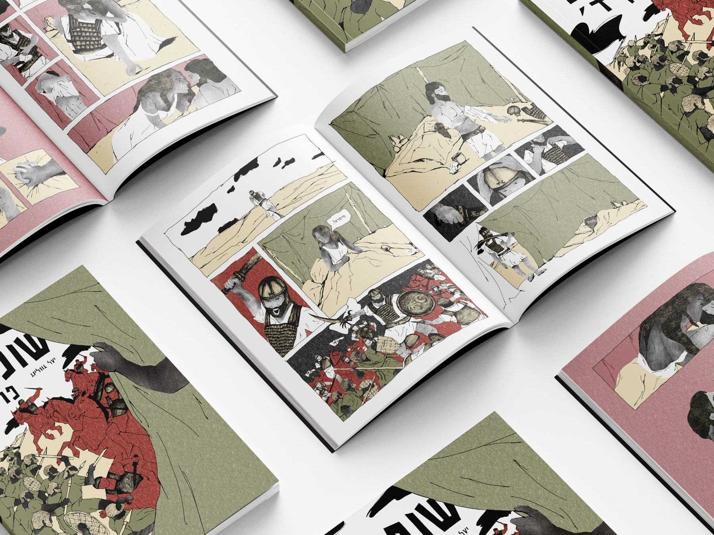
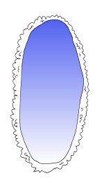
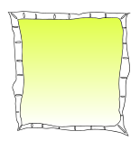
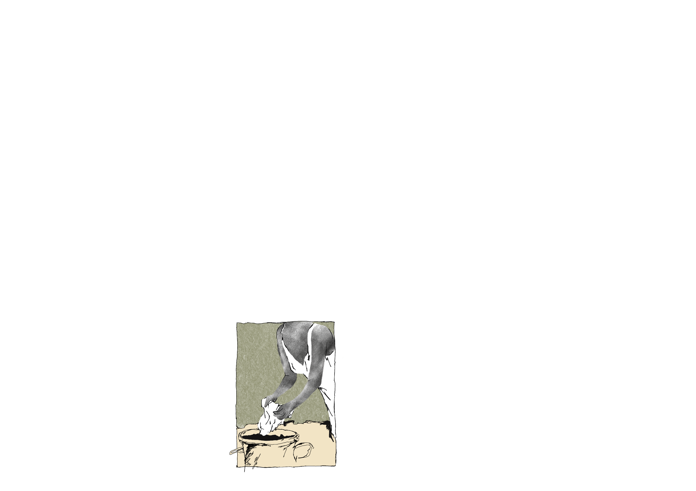
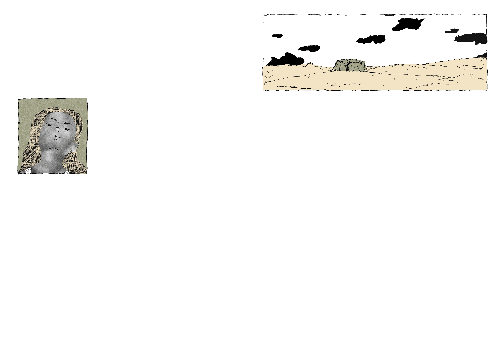
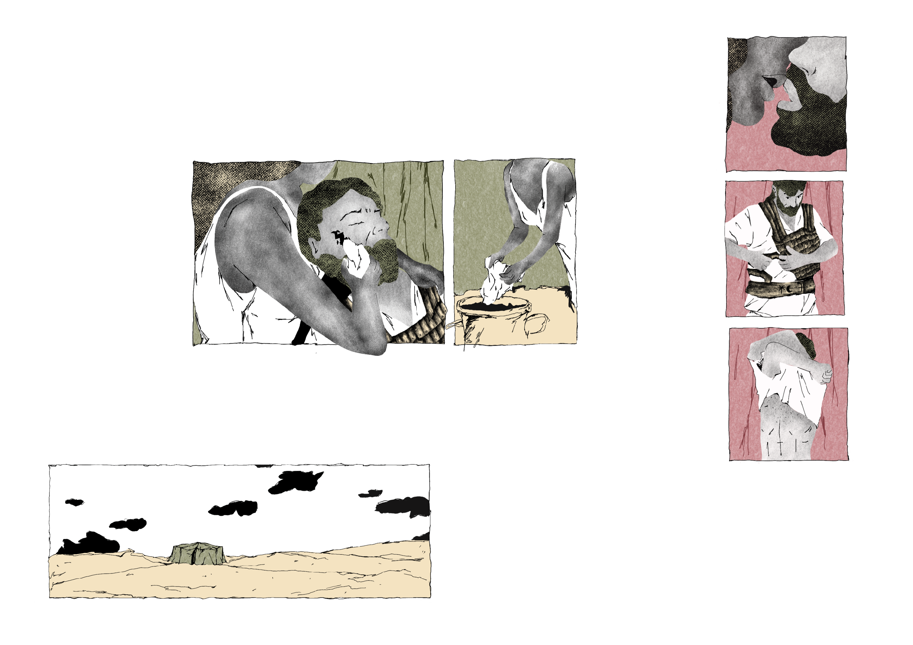

Project
JUDGES,
CHAPTER 4
Inspired by Judges Chapter 4, this comic book reimagines the story of Yael and Sisera.
Traditionally, Yael is celebrated for her decisive act of violence in killing Sisera. I chose to reverse that moment.
In this version, Yael spares Sisera, and her hesitation leads to devastating consequences. The change allows me to question heroism, morality, and the fragile line between compassion and destruction in times of war.
Challenges
- Finding an interesting way to change a historical story that bring on a new meaning without being clique.
- This was a new style, so the challenge was understanding what brushes, textures and details to include on a digital drawing.
Year
2026
Field
Illustration. Print.




NEXT PROJECT
MTV Ident

PREVIOUS PROJECT
Grunge




REACH OUT
Email me
yaelgosling5@gmail.comLet’s talk
+972 538521501